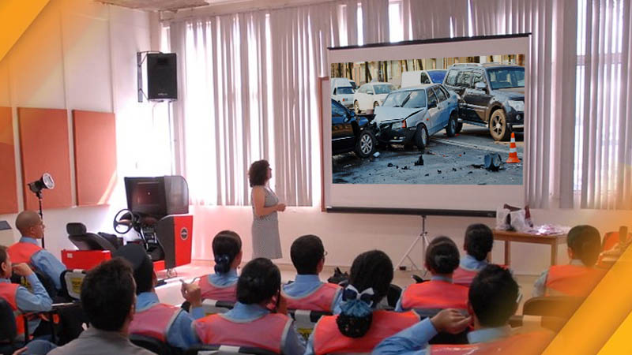

Un Laboratorio con once (11) años de experiencia comprometido con su labor, empleando los más altos estándares de calidad en su trabajo. Contamos con profesionales idóneos y Expertos en diferentes áreas como: normatividad en tránsito, transporte, seguridad vial, criminalística, topografía, fotografía y reconstrucción de accidentes de tránsito; empleando la física y matemática como su base principal.
La preparación y experiencia nos ayuda a realizar investigaciones acordes a la realidad vivida en un siniestro. Empleando técnicas físicas, biomecánicas y de ingeniería precisas y exactas de acuerdo a características propias del accidente.
Estudio de los documentos el informe policial de accidentes de tránsito (IPAT), historia clínica o necropsia, informe técnico de vehículos, fotografías, inspección del lugar de los hechos, entre otros.
Servicio de Investigación de Accidentes de Tránsito
Empleando técnicas físicas, biomecánicas y de ingeniería precisas y exactas de acuerdo a características propias del accidente.

Servicios Jurídicos
Cada uno de nuestros litigantes tienen conocimiento en interpretación de IPAT, cálculos físico matemáticos y topografía de accidentes de tránsito.

Capacitaciones y Seminarios
Esta capacitación se ofrece en la modalidad presencial y virtual mediante la plataforma Moodle, por personal altamente capacitado nacional e internacional.